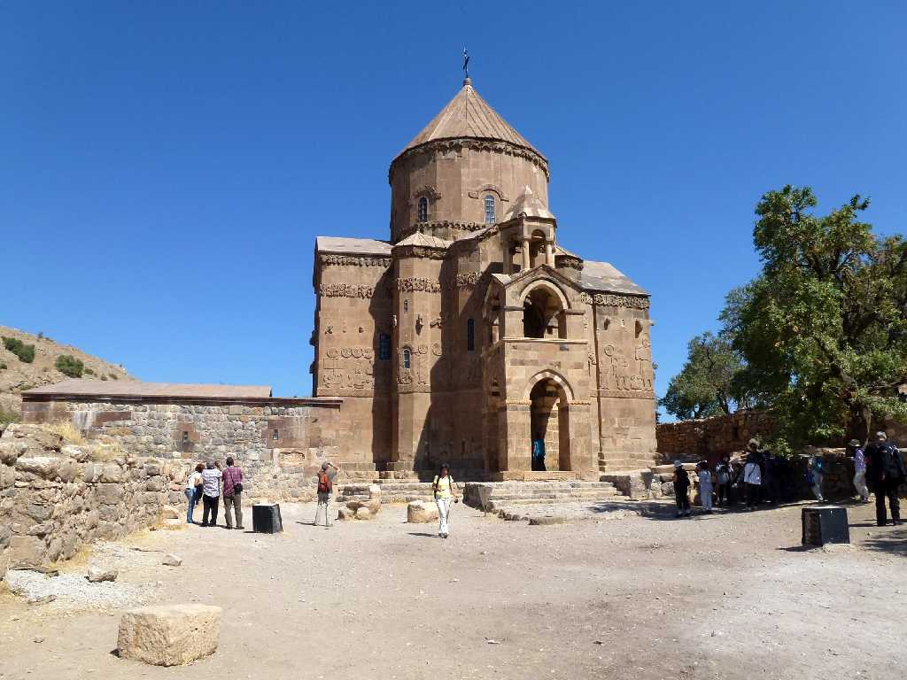
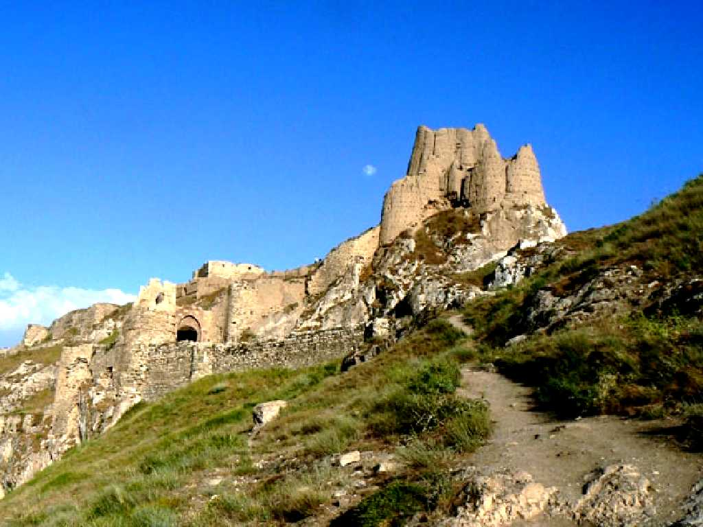
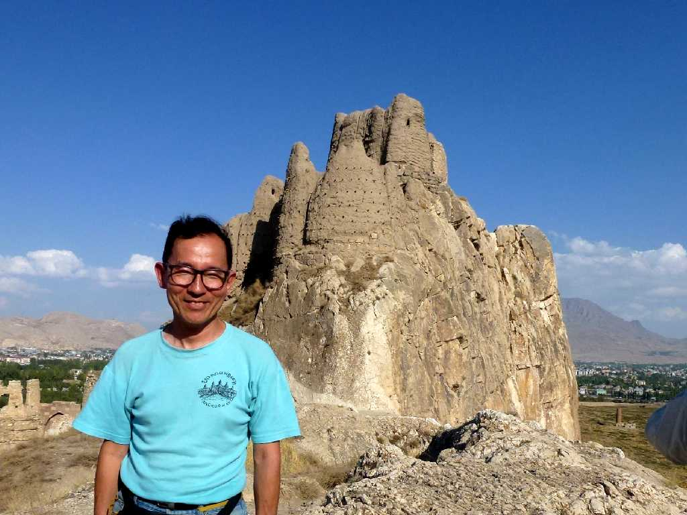
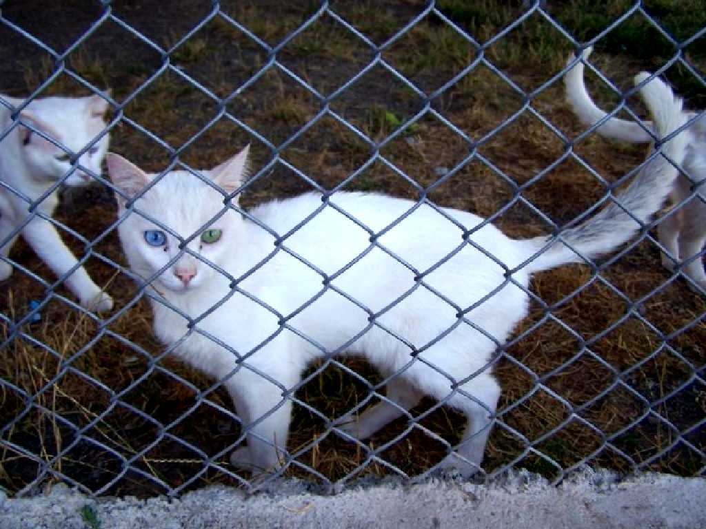

Armenia Church Akdamar Island Van
１０世紀頃創られたアクダマル島のアルメニア教会で外壁には旧約聖書の人々が刻まれ内壁には新約聖書のフレスコ画が残っている

Castle Van
トルコ最大の湖の辺にある ワンは紀元前１０世紀にはウラルトゥ王国の首都として栄え城跡が残っている 王の家族の墓の入口にはくさび形文字が刻まれている

September 14 2011 Castke Van

Kedi Evi Yüzüncü Yıl Üniversitesi Van
左右の目の色が黄と青で純白の毛並みをしたワンにのみ生息する猫 ユズンジュユル大学のワン猫研究所ではワン猫の保護育成を行っている